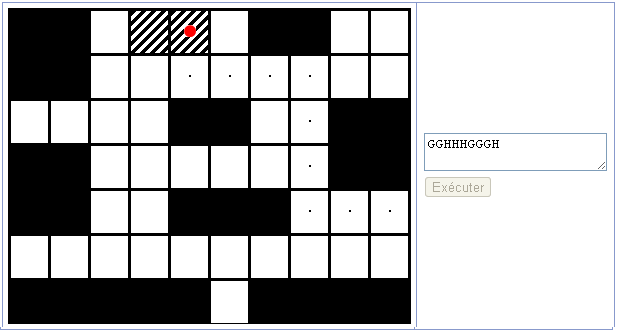

Dans ce sujet, vous ne pouvez pas perdre de points.
Castor a programmé un robot pour explorer un souterrain trop étroit pour qu'il puisse s'y faufiler, représenté par la grille ci-dessous. Le robot, représenté par un rond rouge ne peut passer que sur les cases blanches ou hachurées. Malheureusement les batteries de ce robot sont presque vides. Il va falloir le sortir de là rapidement, avec le peu d'énergie qu'il reste.
Le robot peut être programmé par une séquence de commandes :
Le robot exécute les commandes dans l'ordre, et par exemple "GGB" fait avancer le robot de deux cases vers la gauche, puis d'une case vers le bas. Écrivez la séquence de commandes la plus courte possible, qui permette au robot d'atteindre la sortie, représentée par les cases hachurées. Vous pouvez faire autant d'essais que vous le souhaitez.
Exécutez l'exemple pour bien comprendre.
Plusieurs réponses étaient valides, pour atteindre la sortie en 9 étapes. Il fallait avant tout passer par la droite et au dessus du premier obstacle. Une solution possible était le programme suivant :
GGHHHGGGH
Voici le chemin correspondant :

Pour résoudre le problème, il fallait écrire un programme sous la forme d'une suite de commandes dans un langage très simple. Comme lorsque l'on écrit un programme classique, on avait la possibilité de tester son programme et de le corriger avant de le soumettre. La notion de plus court chemin, un classique en algorithmique, était également abordée, même s'il n'était pas utile ici de prendre une approche systématique pour déterminer le meilleur chemin.